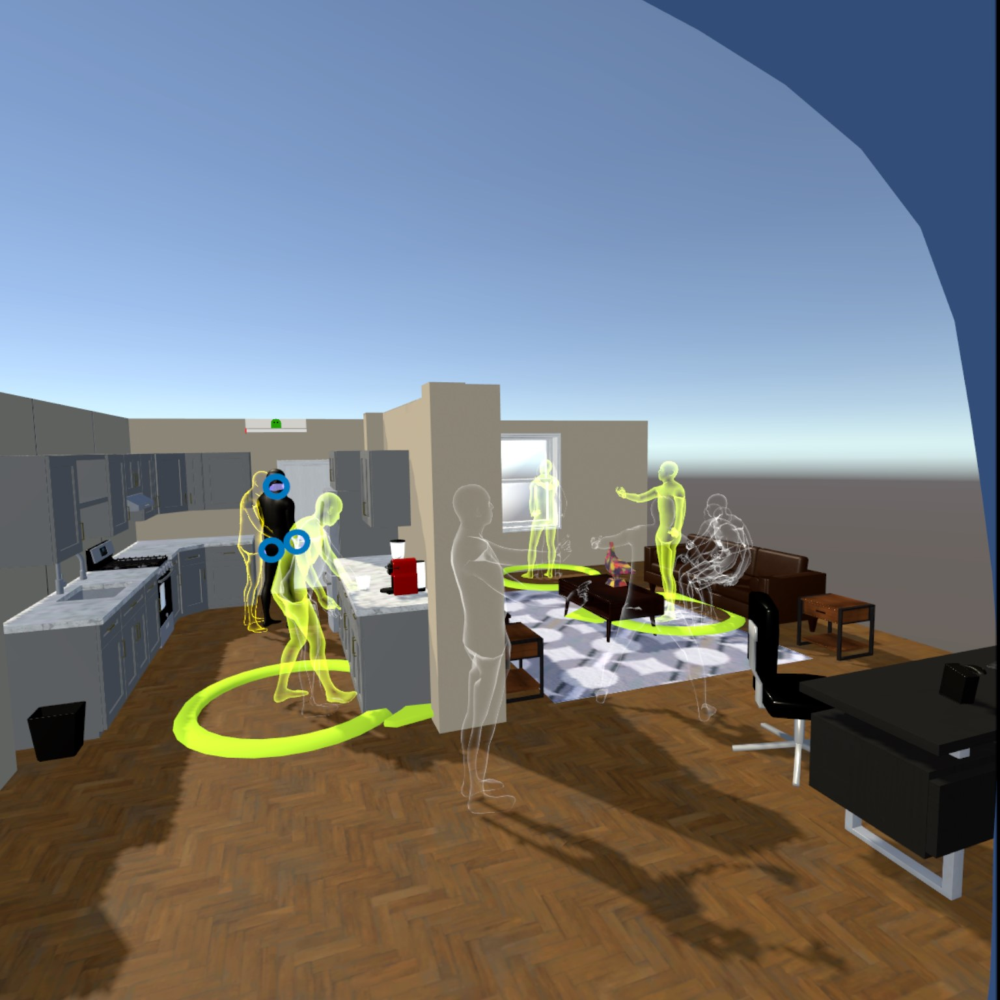
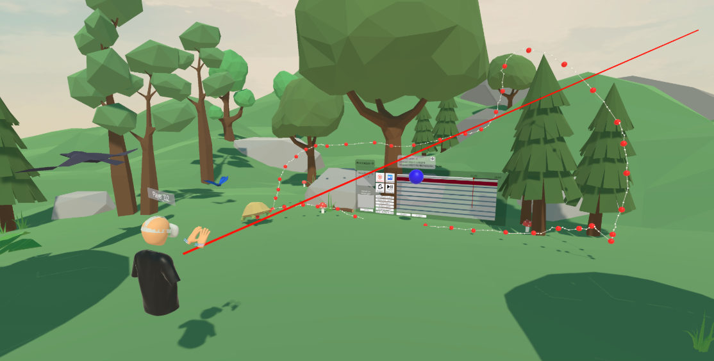
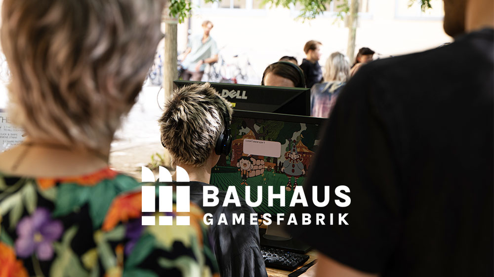
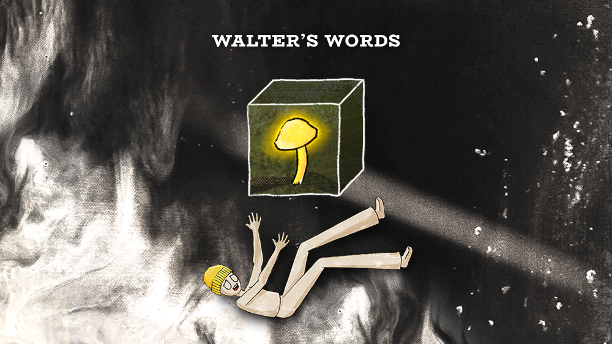
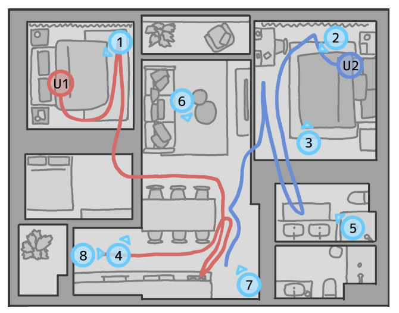
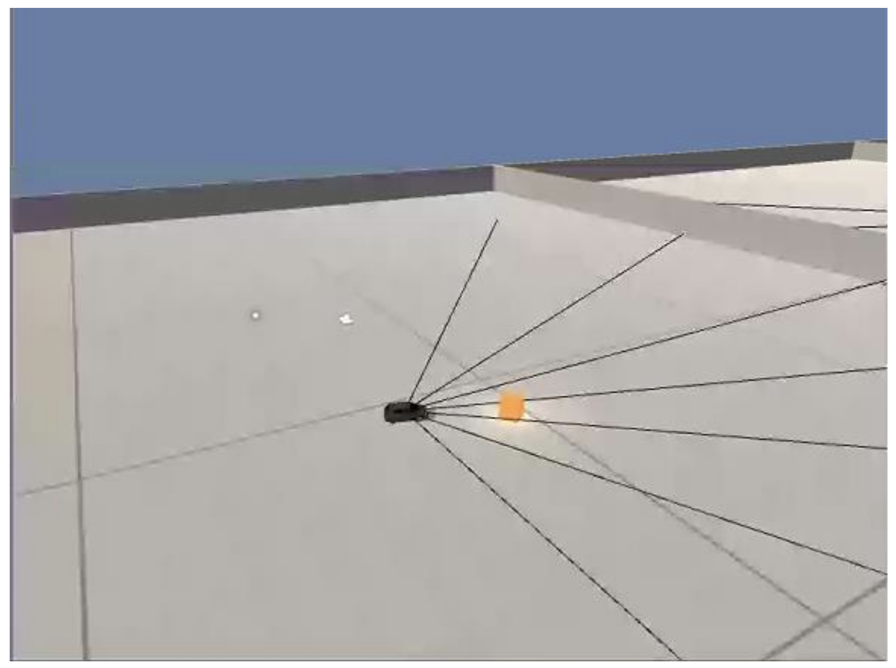

<!DOCTYPE html>
<html lang="en">
<head>
    <meta charset="UTF-8">
    <meta name="viewport" content="width=device-width, initial-scale=1.0">
    <title>Juan Camilo Garcia Cano - Portfolio</title>
    <link rel="stylesheet" href="styles.css">
</head>
<body>
    <header class="header">
        <nav class="nav">
            <div class="logo">Juan Camilo</div>
            <ul class="nav-links">
                <li><a href="#summary">Summary</a></li>
                <li><a href="#experience">Experience</a></li>
                <li><a href="#education">Education</a></li>
                <li><a href="#skills">Skills</a></li>
                <li><a href="#publications">Publications</a></li>
                <li><a href="#languages">Languages</a></li>
                <li><a href="#contact">Contact</a></li>
                <li><a href="projects.html">Projects</a></li>
            </ul>
            <button class="mobile-menu-btn" aria-label="Toggle menu">
                <span></span>
                <span></span>
                <span></span>
            </button>
        </nav>
    </header>

    <main class="cv-main">
        <section id="hero" class="cv-hero">
            <div class="container cv-hero-grid">
                <div class="cv-hero-left">
                    <p class="eyebrow">Computer Scientist</p>
                    <h1>Juan Camilo Garcia <span class="name-email">(juancamigarcia@gmail.com)</span></h1>
                    <p class="hero-lead">VR &amp; Unity game developer; designer by craft, gamer at heart; Colombian scientist on two wheels. Working on Immersive Recordings Editing System in VR.</p>
                    <figure class="thesis-figure">
                        <div class="thesis-image">
                            
                        </div>
                        <figcaption>Computer Science for Digital Media, M.Sc. | Master Thesis - Recording, Playback &amp; Editing of Inverse Kinematic Avatar Movements in Virtual Reality</figcaption>
                    </figure>
                    <div class="contact-chips">
                        <a class="chip" href="https://milorico.itch.io/" target="_blank" rel="noopener noreferrer">https://milorico.itch.io/</a>
                        <a class="chip" href="https://www.linkedin.com/in/camilo-garc%C3%ADa6" target="_blank" rel="noopener noreferrer">LinkedIn</a>
                        <a class="chip" href="https://github.com/jcamilogarciacano" target="_blank" rel="noopener noreferrer">GitHub</a>
                        <span class="chip">+491603444370</span>
                    </div>
                </div>
                <div class="cv-hero-right">
                    <div class="fact-card">
                        <h3>Current Roles</h3>
                        <p>Scientific Assistant - VR &amp; Visualization</p>
                        <p>Scientific Assistant - eTeach Thüringen</p>
                        <p class="meta">Bauhaus-Universität Weimar</p>
                    </div>
                    <div class="fact-card game-card">
                        <div class="game-header">
                            <h3>Mini Runner</h3>
                            <span class="game-status" id="game-status">Space</span>
                        </div>
                        <canvas id="runner-canvas" width="420" height="160" aria-label="Mini runner game"></canvas>
                        <div class="game-controls">
                            <button id="runner-btn" class="btn btn-primary btn-small" type="button">Space</button>
                            <span class="game-score" id="game-score">Score: 0</span>
                        </div>
                        <p class="game-hint">Use space to jump. Avoid the blocks!</p>
                    </div>
                    <div class="fact-card map-card">
                        <div class="game-header">
                            <h3>Weimar, Germany</h3>
                            <span class="game-status">Mini map</span>
                        </div>
                        <div class="map-frame">
                            <iframe title="Weimar map" src="https://www.openstreetmap.org/export/embed.html?bbox=11.3000%2C50.9600%2C11.3600%2C50.9900&amp;layer=mapnik&amp;marker=50.9795%2C11.3235" allowfullscreen loading="lazy"></iframe>
                        </div>
                    </div>
                </div>
            </div>
        </section>

        <section id="summary" class="cv-section">
            <div class="container narrow">
                <h2 class="section-title">Professional Summary</h2>
                <p class="summary-text">Independently motivated software developer interested in implementing ideas that will facilitate future developers to achieve greater things, and thus, advancing our technological and scientific progress as human civilization. I perceive VR as a tool that can help us explore another "dimension" of possibilities for human experiences and human-computer interactions, that's why I enjoy working on this field, and continuing my research, while surrounded by knowledgeable colleagues and peers.</p>
            </div>
            <div class="container">
                <div class="summary-projects">
                    <article class="fact-card summary-project-card">
                        <div class="summary-project-image">
                            
                        </div>
                        <h3 class="thesis-caption">ReVRse: Semantic Editing Tools for Immersive Recordings - 2025</h3>
                        <a class="project-link" href="https://www.uni-weimar.de/de/universitaet/aktuell/veranstaltungskalender/highlights-des-jahres/2025/summaery/projekte/?tx_showcase_summaeryprojectpublic%5Baction%5D=show&amp;tx_showcase_summaeryprojectpublic%5Bcontroller%5D=Summaery&amp;tx_showcase_summaeryprojectpublic%5Bproject%5D=9922&amp;cHash=6c6881e447090526f6808bbd87b6b6ef" target="_blank" rel="noopener noreferrer">View project details</a>
                    </article>
                    <article class="fact-card summary-project-card">
                        <div class="summary-project-image">
                            
                        </div>
                        <h3 class="thesis-caption">SUMMAERY 2024 Digital Dreams | Bauhaus Gamesfabrik</h3>
                        <div class="project-links dual">
                            <a class="project-link" href="https://www.uni-weimar.de/en/university/news/calendar/highlights-of-the-year/archive/2024/summaery/projects/?tx_showcase_summaeryprojectpublic%5Baction%5D=show&amp;tx_showcase_summaeryprojectpublic%5Bcontroller%5D=Summaery&amp;tx_showcase_summaeryprojectpublic%5Bproject%5D=7288&amp;cHash=2566b650b47732bef4e5534a5a885aea" target="_blank" rel="noopener noreferrer">View project details</a>
                            <a class="project-link" href="https://milorico.itch.io/mountain-peak" target="_blank" rel="noopener noreferrer">Go to game page</a>
                        </div>
                    </article>
                    <article class="fact-card summary-project-card">
                        <div class="summary-project-image">
                            
                        </div>
                        <h3 class="thesis-caption">Walter's Words — SUMMAERY 2024</h3>
                        <a class="project-link" href="https://www.uni-weimar.de/en/university/news/calendar/highlights-of-the-year/archive/2024/summaery/projects/?tx_showcase_summaeryprojectpublic%5Baction%5D=show&amp;tx_showcase_summaeryprojectpublic%5Bcontroller%5D=Summaery&amp;tx_showcase_summaeryprojectpublic%5Bproject%5D=7187&amp;cHash=500aeb6cb95ac135598feb2f8d7ade63" target="_blank" rel="noopener noreferrer">View project details</a>
                    </article>
                </div>
            </div>
        </section>

        <section id="publications" class="cv-section">
            <div class="container">
                <h2 class="section-title">Publications</h2>
                <div class="publication-grid">
                    <article class="publication-card">
                        <div class="pub-image">
                            
                        </div>
                        <div class="pub-header">
                            <h3>Editing Immersive Recordings: An Elicitation Study</h3>
                            <span class="pub-date">10/2024</span>
                        </div>
                        <ul class="bullet-list">
                            <li>Immersive recordings capture virtual reality interactions and are used  in various contexts such as education and entertainment.</li>
                            <li>We interviewed expert editors of video  recordings to understand their  workflows, familiarized them with  immersive recordings, and asked them  about what editing challenges and  capabilities they can envision for  immersive recordings.</li>
                        </ul>
                        <a href="https://doi.org/10.1145/3641825.3689499" class="project-link" target="_blank" rel="noopener noreferrer">https://doi.org/10.1145/3641825.3689499</a>
                    </article>
                    <article class="publication-card">
                        <div class="pub-image">
                            
                        </div>
                        <div class="pub-header">
                            <h3>Development of an intelligent vehicle simulation for autonomous navigation through an urban environment.</h3>
                            <span class="pub-date">11/2019</span>
                        </div>
                        <ul class="bullet-list">
                            <li>The development of smart vehicles has been accelerating rapidly in  recent years, allowing for the refinement of their capabilities in  autonomous driving systems. This document presents a proposal that  enables the design and testing of control systems for the partial  automation of a vehicle, using software that simulates urban conditions.</li>
                        </ul>
                        <a href="http://hdl.handle.net/20.500.12749/12046" class="project-link" target="_blank" rel="noopener noreferrer">http://hdl.handle.net/20.500.12749/12046</a>
                    </article>
                </div>
            </div>
        </section>

        <section id="experience" class="cv-section cv-alt">
            <div class="container">
                <h2 class="section-title">Work Experience</h2>
                <div class="timeline">
                    <article class="timeline-card">
                        <div class="timeline-header">
                            <div>
                                <h3>Scientific Assistant &amp; VR Developer</h3>
                                <p class="company">Bauhaus-Universität Weimar</p>
                            </div>
                            <div class="timeline-meta">
                                <span>05/2024 - Present</span>
                                <span class="location">Weimar, Thuringia, Germany</span>
                            </div>
                        </div>
                        <ul class="bullet-list">
                            <li>Developing Semantic Editing Tools for Immersive Recording (ReVRse) in Unity and C++</li>
                        </ul>
                    </article>
                    <article class="timeline-card">
                        <div class="timeline-header">
                            <div>
                                <h3>Scientific Assistant - HIWI</h3>
                                <p class="company">Bauhaus-Universität Weimar</p>
                            </div>
                            <div class="timeline-meta">
                                <span>06/2024 - Present</span>
                                <span class="location">Weimar, Thuringia, Germany</span>
                            </div>
                        </div>
                        <ul class="bullet-list">
                            <li>Wordpress &amp; AI developer - eTeach-Netzwerk Thüringen.</li>
                        </ul>
                    </article>
                    <article class="timeline-card">
                        <div class="timeline-header">
                            <div>
                                <h3>Full Stack IONIC Web Developer</h3>
                                <p class="company">Minero Int</p>
                            </div>
                            <div class="timeline-meta">
                                <span>05/2021 - 01/2022</span>
                                <span class="location">Bogotá, Capital District, Colombia</span>
                            </div>
                        </div>
                        <ul class="bullet-list">
                            <li>Creation of a friendly and responsive interface for a financial web portal.</li>
                            <li>Implementation of connectivity between the database and the frontend in an encrypted and secure way.</li>
                            <li>Add new features by expanding the functionalities of the system and implementing external API’s.</li>
                        </ul>
                    </article>
                    <article class="timeline-card">
                        <div class="timeline-header">
                            <div>
                                <h3>Game Designer &amp; UI Designer</h3>
                                <p class="company">Life Is The Game</p>
                            </div>
                            <div class="timeline-meta">
                                <span>06/2020 - 12/2020</span>
                                <span class="location">Bucaramanga, Santander, Colombia</span>
                            </div>
                        </div>
                        <ul class="bullet-list">
                            <li>Proposals for new mechanics and decisions about gameplay, based on information gathered in meetings to know the client's vision about the final product.</li>
                            <li>Communicate with the development team about the customer's vision for the product and explain the game design to ensure everyone understand the same.</li>
                        </ul>
                    </article>
                </div>
            </div>
        </section>

        <section id="education" class="cv-section">
            <div class="container">
                <h2 class="section-title">Education</h2>
                <div class="timeline">
                    <article class="timeline-card">
                        <div class="timeline-header">
                            <div>
                                <h3>Master of Science - MS</h3>
                                <p class="company">Bauhaus-Universität Weimar</p>
                            </div>
                            <div class="timeline-meta">
                                <span>10/2022 - Present</span>
                                <span class="location">Weimar, Germany</span>
                            </div>
                        </div>
                        <p class="course-note">Courses</p>
                    </article>
                    <article class="timeline-card">
                        <div class="timeline-header">
                            <div>
                                <h3>Bachelor of Engineering - BE</h3>
                                <p class="company">Universidad Autónoma de Bucaramanga</p>
                            </div>
                            <div class="timeline-meta">
                                <span>01/2015 - 12/2020</span>
                                <span class="location">Bucaramanga, Colombia</span>
                            </div>
                        </div>
                        <p class="course-note">Courses</p>
                    </article>
                </div>
            </div>
        </section>

        <section id="skills" class="cv-section cv-alt">
            <div class="container">
                <h2 class="section-title">Skills</h2>
                <div class="skills-grid">
                    <div class="skill-card">
                        <h3>Development</h3>
                        <div class="chip-row">
                            <span class="chip">Unity</span>
                            <span class="chip">C++</span>
                            <span class="chip">Python</span>
                            <span class="chip">JavaScript/TypeScript</span>
                            <span class="chip">HTML/CSS/JS</span>
                            <span class="chip">VR &amp; AR</span>
                            <span class="chip">Machine Learning</span>
                        </div>
                    </div>
                    <div class="skill-card">
                        <h3>Tools &amp; Platforms</h3>
                        <div class="chip-row">
                            <span class="chip">Miro</span>
                            <span class="chip">Wordpress</span>
                            <span class="chip">Open AI Platform</span>
                            <span class="chip">Prototyping</span>
                        </div>
                    </div>
                    <div class="skill-card">
                        <h3>Design</h3>
                        <div class="chip-row">
                            <span class="chip">Blender3D</span>
                            <span class="chip">Photoshop</span>
                            <span class="chip">UI Design</span>
                        </div>
                    </div>
                </div>
            </div>
        </section>

        <section id="languages" class="cv-section cv-alt">
            <div class="container split-columns">
                <div class="info-card">
                    <h3>Languages</h3>
                    <ul class="bullet-list">
                        <li>🇩🇪 German — Ich verstehe Alltagsgespräche und kann einfache Fachthemen besprechen.</li>
                        <li>🇺🇸 English — I communicate confidently in professional settings and write technical documentation with ease.</li>
                        <li>🇨🇴 Español — Hablo español nativamente y puedo explicar temas técnicos y académicos con precisión.</li>
                    </ul>
                </div>
                <div class="info-card">
                    <h3>Interests</h3>
                    <div class="chip-row">
                        <span class="chip">Piano</span>
                        <span class="chip">Drawing</span>
                        <span class="chip">Tech News</span>
                        <span class="chip">Languages</span>
                        <span class="chip">Yoga</span>
                        <span class="chip">Bike Riding</span>
                        <span class="chip">Travel</span>
                        <span class="chip">Games</span>
                    </div>
                </div>
            </div>
        </section>

        <section id="contact" class="cv-section contact">
            <div class="container contact-grid">
                <div class="contact-details">
                    <h2 class="section-title align-left">Contact</h2>
                    <p class="contact-intro">Let's connect about research, VR/AR development, or collaboration opportunities.</p>
                    <ul class="contact-list">
                        <li>Email: <a href="mailto:juancamigarcia@gmail.com">juancamigarcia@gmail.com</a></li>
                        <li>Phone: <a href="tel:+491603444370">+491603444370</a></li>
                        <li>Location: Weimar, Germany</li>
                        <li>Portfolio: <a href="https://milorico.itch.io/" target="_blank" rel="noopener noreferrer">https://milorico.itch.io/</a></li>
                        <li>LinkedIn: <a href="https://www.linkedin.com/in/camilo￾garcía6" target="_blank" rel="noopener noreferrer">https://www.linkedin.com/in/camilo￾garcía6</a></li>
                        <li>GitHub: <a href="https://github.com/jcamilogarciacano" target="_blank" rel="noopener noreferrer">https://github.com/jcamilogarciacano</a></li>
                    </ul>
                </div>
                <form class="contact-form" id="contact-form">
                    <div class="form-group">
                        <label for="name">Name</label>
                        <input type="text" id="name" name="name" required>
                    </div>
                    <div class="form-group">
                        <label for="email">Email</label>
                        <input type="email" id="email" name="email" required>
                    </div>
                    <div class="form-group">
                        <label for="message">Message</label>
                        <textarea id="message" name="message" rows="5" required></textarea>
                    </div>
                    <button type="submit" class="submit-button">Send Message</button>
                </form>
            </div>
        </section>
    </main>

    <footer class="footer">
        <div class="container">
            <p>&copy; 2025 Juan Camilo Garcia Cano. All rights reserved.</p>
            <div class="social-links">
                <a href="https://github.com/jcamilogarciacano" target="_blank" rel="noopener noreferrer" aria-label="GitHub">GitHub</a>
                <a href="https://www.linkedin.com/in/camilo￾garcía6" target="_blank" rel="noopener noreferrer" aria-label="LinkedIn">LinkedIn</a>
            </div>
        </div>
    </footer>

    <script src="script.js"></script>
</body>
</html>
